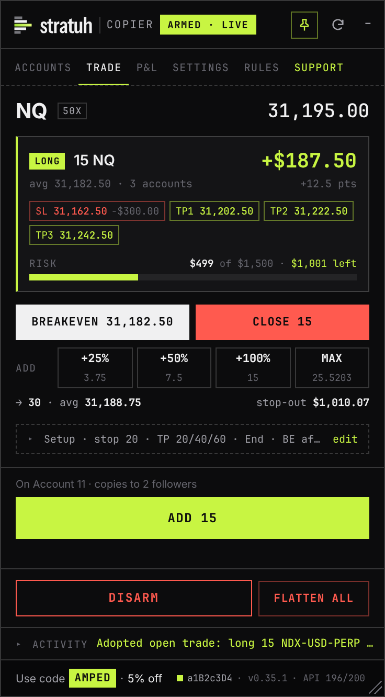

It places real orders on live accounts. Once armed, every order on your master is sent to every follower within a fraction of a second. One bad trade hits every linked account at once. Vest has no official copier, and every order it sends is your responsibility. Start with the smallest size.
01Install
About two minutes. You need Chrome, Edge, Brave or Firefox on a computer.
- Add the Tampermonkey extension from your browser's store: Chrome / Brave, Edge or Firefox. Click Add on the store page.Use these store pages, not download buttons on other sites: some of those are ads for unrelated software.
- Chrome, Edge, Brave: go to
chrome://extensions, open Tampermonkey's Details page and switch Allow User Scripts on.Without this, Tampermonkey installs the script but never runs it. Older browser versions call it Developer mode (top-right of the extensions page). Firefox doesn't need it. - Open the install link: vest-copier.user.js on GitHub. Tampermonkey shows an install page; click Install. From then on it keeps itself up to date.No link? Click the Tampermonkey icon, Create a new script, delete the template, paste the entire contents of
vest-copier.user.jsand press Ctrl+S. Paste the text itself: a .txt file opened in the browser isn't installed. - Open or refresh next.vestmarkets.com and log in. The STRATUH Copier panel appears on Vest's chart, on the left, and stays inside the chart. Drag its header to move it and its bottom-right corner to resize it. The pin lets it float anywhere; minimised, it's a small pill you click to open.
Updating: when there's a newer version, a bar under the panel's tabs shows Install. Click it, click Update on Tampermonkey's page, then come back to the Vest tab: it reloads by itself. Do it while you're flat. Your settings are kept.
02Copy your first trade
- On the Accounts tab, click M on the account you'll trade. That's the master, and it moves to the top in its own block.
- Click FLW on each account that should copy it. Those are the followers.By default followers must be the same size and type as the master. To mix sizes, turn on Cap-to-fit in Settings first (see Sizing).
- Set your leverage on Vest the way you'll trade, then click ARM. On first use, read the risk terms, tick the box and click Accept and continue.Arming checks every account, then sets each follower's leverage to match the master.
- Trade the master as you normally would, from Vest's order ticket or from the Trade tab. The activity line at the bottom shows each order, then one line per follower and a fill summary such as
Fills 3/3 confirmed · avg slip 0.25pt. Click it for the full log. - Click DISARM when you're finished. Disarming stops copying. It does not close anything.

When ARM refuses
The log names the account and the reason. Arming is allowed when everyone is flat, or when the master and followers already hold the same trade (same market, same direction): that trade is adopted and managed from then on. It refuses when a follower is in the opposite direction, holds a trade the master doesn't, or has a resting order. Fix that account on Vest and arm again.
03The Trade tab
An order ticket built around points, for the market Vest is showing. It trades the master; when armed, followers copy it like any other master order.
| Part | What it does |
|---|---|
| Margin bar | How much of Vest's buying power your position uses, and how many contracts are left. The striped part previews the order you're about to send. |
| Risk bar | What your stop would lose, fees included, against the room left before your floor. Amber near the limit, red past it. Both bars use the tightest account. |
| Size | Qty, Risk $ (the panel sizes the order so hitting your stop loses that amount; $1 per point per contract) or Max: the most the account can open, the same as Vest's 100%. |
| Targets | How the size splits across them: Start puts the most on TP1, Even splits evenly, End puts the most on the last target. + Add adds another. |
| Price ladder | Targets, entry, stop and the fail price in one table. Type each level's points in the middle; Sell prices are on the left, Buy prices on the right. |
| Auto BE | After TP1 or At +pts moves the stop to your entry. Lock adds points of profit beyond it (0 = exact breakeven). |
Each market keeps its own size, stop and targets: switch Vest's chart to ES and the tab switches to ES with your ES numbers. The panel warns when a size is more than the account can open, or when a stop-out would take the account past its floor before the stop fills. Right after a market order fills, the stop and targets move to exactly your points from the price you actually got. They're placed as Vest's own stop-loss and take-profit orders, so they still work if you close the tab.
Pricing a limit on the chart
Click Buy LMT or Sell LMT, then click Vest's chart where you want the order (or type the price). A dashed line shows it on the chart and the ladder shows its stop and targets. Nothing is sent until Place; Esc cancels. The stop and targets go in with the order and Vest activates them when it fills.


In a trade
The position becomes the screen: live P&L, chips for where your stop and targets sit, and the risk left before your floor, with the setup folded into one line you can open. Breakeven moves the stop to your average entry once price is clear of it. Close closes the master, and followers close with it when armed. The button for your direction becomes Add, with chips for +25%, +50%, +100% of your position or MAX, the most that fits your margin and keeps a stop-out above the floor. An add rebuilds the stop and targets from the new average entry, except the ones you moved yourself (to breakeven, closer or further): those stay where you put them.
Auto BE runs in your browser. Keep the Vest tab open for it to move your stop. It survives a page refresh and stops watching once the trade closes.
04Sizing
Strict 1:1 (default)
Every follower gets the master's exact size. Followers must be the same size and type as the master. Simple and predictable for matched accounts.
Cap-to-fit (Settings)
Each follower is sized to its own equity, so you can mix account sizes. Every account takes the same percentage risk with the same stop distance.
// only when scaling down: × 0.95 buffer, rounded down to the market's size step
// within 0.5% of the master's equity: copied 1:1
Example: a $25k master trading 1 NQ drives a $5k follower at about 0.19 NQ. Both lose the same share of their account if the stop is hit. An account too small to hold even the minimum size is skipped, with a line in the log saying so.
05What gets copied
| On the master | On each follower |
|---|---|
| Open, with stop and targets | Copied. Same prices; sizes scaled with Cap-to-fit. |
| Limit order | Copied, with its stop and targets. Moving or cancelling it on Vest's chart is copied too. |
| Add to position | Copied, scaled to the follower's size. |
| Partial close / close | Copied, in proportion. |
| Move, add or remove a stop or target | Copied to the matching order. |
| Stop or target fills | Each account's own stop and targets fill on Vest at the same prices. The log says which filled, on which accounts. |
| Anything while disarmed | Not copied. |
| Orders Vest refuses on the master | Not copied. |
| Vest closing the master for you | Not copied. A breach or liquidation isn't an order you placed. A follower still in the trade a few seconds later is offered as Flatten / Keep. |
| An account fails | It drops out at once. A follower is removed and the others keep copying; if it's the master, the copier disarms. |
| Trades placed on a follower | Ignored. Only the master is watched. |
06Safety controls
DISARM
Stops copying immediately. Open positions stay open.
Flatten All
Closes every position and cancels every order on all loaded accounts, instantly and with no confirmation. The copier stays armed, so it's also a quick way out of a trade across every account.
Fill check
After each entry, the copier confirms every account actually filled. One that didn't is named in the log and dropped from that trade.
Site check
When Vest updates its website, the status in the bottom-right corner turns amber and arming pauses. Click it to run a read-only check. If nothing is red, click Accept this build.
After a Vest update, do one small test before trading size: one follower, open with a stop, move the stop, close.
07Good habits
- Start with the smallest size across every account, and confirm the fills line before trading bigger.
- Size so that losing on every account at the same time is survivable.
- Set your stop when you enter, so every account is protected from the first second.
- Disarm before placing a trade on the master that you don't want copied.
- Changed leverage or market? Disarm and arm again so followers match.
- Disarm and go flat when you're done for the day.
08Troubleshooting
- The panel doesn't appear
- Check that the script is enabled in Tampermonkey, that Allow User Scripts is on (step 2), and that you're on next.vestmarkets.com. Then refresh.
- Can't select a follower
- It's a different size or type than the master. Turn on Cap-to-fit in Settings, or pick matching accounts.
- "… did NOT fill"
- Vest accepted the order but didn't execute it, usually because the account lacks margin for that size. The margin bar on the Trade tab shows how much fits.
- Breakeven stays grey
- Price has to be clear of your entry first, since Vest refuses a stop the bid or ask has already passed. Hover the button for the reason.
- "Vest updated" (amber, bottom right)
- Click it and run the site check. Arming stays paused until you accept the new build.
- Need a hand
- Ask in the Discord.
- Something looks wrong
- Open the Support tab, describe what happened and click Save report & open issue. It saves one report file and opens a GitHub issue with your description filled in: drag the file in and submit. The file has no passwords or login tokens, and account ids are replaced by names.